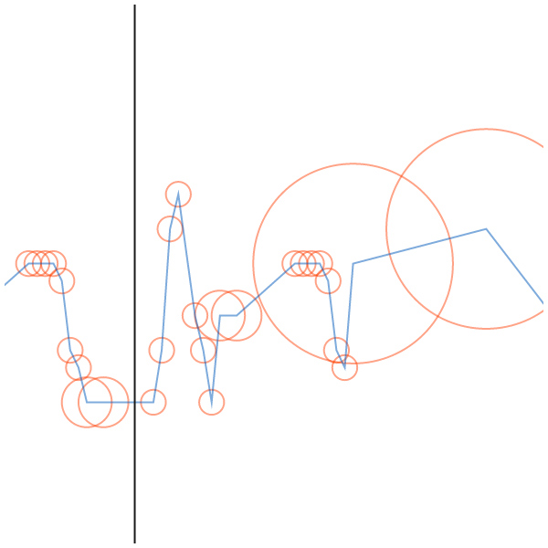

NodeBox 2015 Antwerp Masterclass
Self-documenting Visualisations, 16-20 March 2015.
These are the results of a one-week masterclass on data visualization held in Sint Lucas Antwerp. All visualizations are created in NodeBox Live. You can see progress and sketches on the workshop blog.
Frequencies (Warning: BIG PAGE — 20MB)
Lynn Hofmann

Royal Blood Visualized
Woody Dirks
Patterns of Behaviour
Kristina Nickel
Average Consumption
Caroline Anseeuw
Raging Revolving Door
Quinten De Meester
My iTunes Library
Sanne De Block
All work is copyrighted by their respective owners. NodeBox Live is a product of the Experimental Media Research Group.